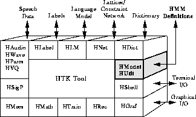

The principle function of HTK is to manipulate sets of hidden Markov models (HMMs). The definition of a HMM must specify the model topology, the transition parameters and the output distribution parameters. The HMM observation vectors can be divided into multiple independent data streams and each stream can have its own weight. In addition, a HMM can have ancillary information such as duration parameters. HTK supports both continuous mixture densities and discrete distributions. HTK also provides a generalised tying mechanism which allows parameters to be shared within and between models.

In order to encompass this rich variety of HMM types within a single framework, HTK uses a formal language to define HMMs. The interpretation of this language is handled by the library module HMODEL which is responsible for converting between the external and internal representations of HMMs. In addition, it provides all the basic probability function calculations. A second module HUTIL provides various additional facilities for manipulating HMMs once they have been loaded into memory.
The purpose of this chapter is to describe the HMM definition language in some detail. The chapter begins by describing how to write individual HMM definitions. HTK macros are then explained and the mechanisms for defining a complete model set are presented. The various flavours of HMM are then described and the use of binary files discussed. Finally, a formal description of the HTK HMM definition language is given.
As will be seen, the definition of a large HMM system can involve considerable complexity. However, in practice, HMM systems are built incremently. The usual starting point is a single HMM definition which is then repeatedly cloned and refined using the various HTK tools (in particular, HEREST and HHED). Hence, in practice, the HTK user rarely has to generate complex HMM definition files directly.